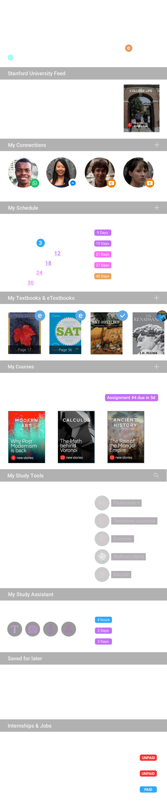

<!doctype html>
<html class="no-js" lang="">
    <head>
        <meta charset="utf-8">
        <meta http-equiv="x-ua-compatible" content="ie=edge">
        <title></title>
        <meta name="description" content="">
        <meta name="viewport" content="width=device-width, initial-scale=1">

        <link rel="apple-touch-icon" href="apple-touch-icon.png">
        <!-- Place favicon.ico in the root directory -->

        <link rel="stylesheet" href="css/normalize.css">
        <link rel="stylesheet" href="css/main.css">
        <script src="js/vendor/modernizr-2.8.3.min.js"></script>

        <meta name="viewport" content="width=device-width, initial-scale=1.0, maximum-scale=1.0, user-scalable=no" />
        <meta name="apple-mobile-web-app-capable" content="yes" />

        <link rel="stylesheet" href="demo.css">
    </head>
    <body style="overflow:hidden; position:fixed">
        <div style="position:relative; overflow:hidden; ">
            
<!--            <div style="overflow-y:auto; position:absolute; top:0px; left:0px; width:100%; height:100%; -webkit-overflow-scrolling:touch">
                
            </div> -->

            <div id="left-container" class="mobile">
                <div id="extra-container">
                    
                </div>
                
            </div>

        </div>

        <script src="js/vendor/jquery-1.11.3.min.js"></script>
        <script src="js/plugins.js"></script>
        <script src="js/main.js"></script>
    </body>
</html>
